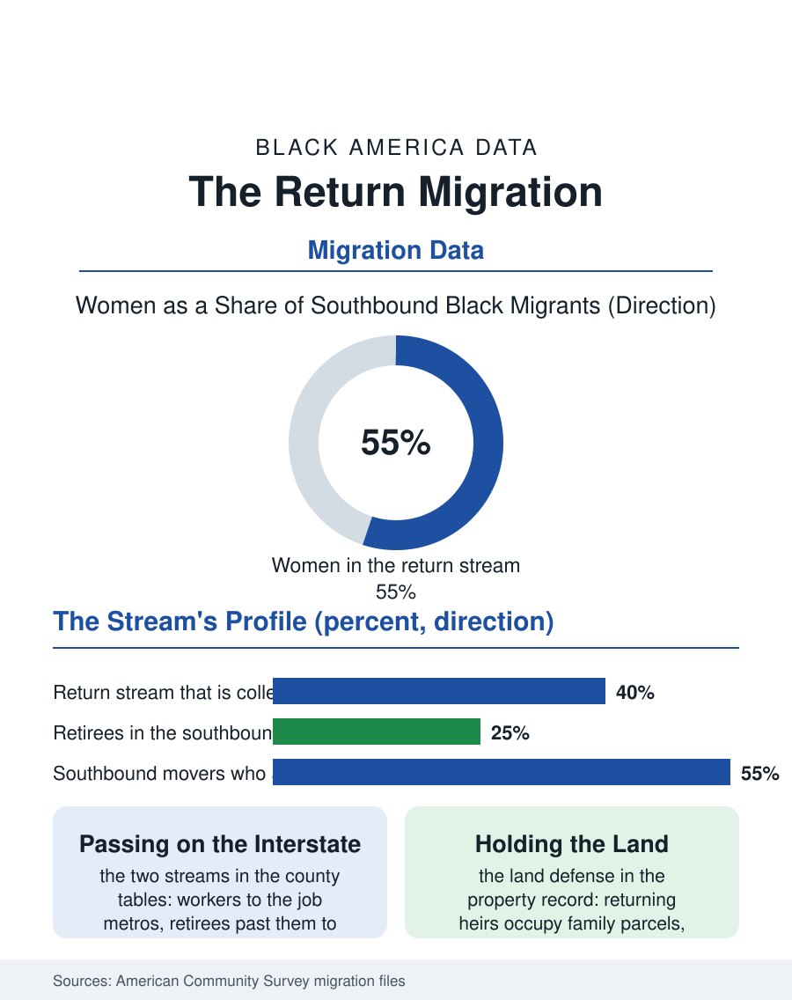

Black Census
Going Home: The Return Migration South
The southbound stream is older, more educated, and more female than the one it reverses, part arbitrage, part homecoming, part land defense. The return file.

The return migration is the emotional center of the migration data: Black Americans moving South not only for jobs and houses but toward ancestry, toward the counties their grandparents left, the churches their families founded, the land that still carries their names. The census numbers let the sentiment be measured, and the measurement shows a stream that is older, more educated, and more female than the migration it reverses. This article reads the return file, the New Great Migration's most distinctive current.
Who Goes Back
The demographic profile of the southbound stream, assembled from the migration files and the survey microdata, differs from the northbound stream of a century ago in every particular. The Great Migration moved young laborers with low formal education toward industrial wages; the return moves a cross-section weighted toward the credentialed and the established: college graduates leaving the northern metros for Atlanta, Charlotte, Houston, and Raleigh in their working years, and retirees, the migration's most distinctive cohort, returning to the small cities and county seats of the Black Belt with pensions, equity, and fifty years of northern life behind them. The women of the stream outnumber its men, following the population's own composition and the care economy's logic, daughters returning toward mothers, grandmothers returning toward grandchildren who have themselves migrated south, the family reassembling on the ancestral ground. The destinations split by life stage with geographic precision: the working stream to the job metros, the retiring stream past them, to the hometowns, a pattern visible in the county-level net migration tables where Black Belt counties that lost population for a century record, in recent cycles, small net gains of older Black migrants even as their young still leave, the two streams passing each other on the same interstate.
The Economics Under the Sentiment
The return is also a trade, and the file prices it without embarrassment. The retiring returner sells a northern house whose value the twentieth century's restricted market suppressed and the twenty-first's gentrification restored, and buys southern land and housing at prices that convert the sale into both a home and a reserve; the working returner arbitrages the salary-housing spread the interstate file quantifies, increasingly keeping a northern salary on a southern mortgage through remote work. Heirs' property threads through the retiring stream with particular force: the return is, for many families, a land defense, an heir moving onto the family parcel to hold it, pay its taxes, and interrupt the partition-sale machinery the land file describes, so that the migration data and the property data record the same decision from two sides. The receiving communities feel the stream as capital and capacity arriving: returners staff the churches, the school boards, the local offices, and the businesses of towns their grandparents' generation left underfunded, a reverse transfer of the human capital the Great Migration exported, which local historians have begun to document town by town. The friction is also documented, honestly, in the same record: the returner's northern habits meeting the hometown's ways, the politics of the newcomer who is also the native, the land prices in the receiving towns beginning to move under the stream's own weight.
The Meaning the Data Can Carry
Demography is not built to measure meaning, but the return file is where this atlas comes closest to watching it try. The survey's reason-for-move boxes, family, housing, employment, contain the return without describing it; the description lives in the qualitative record, the oral histories and the hometown studies, where the returners explain themselves in the vocabulary of roots, rest, and refusal, rest from the northern century's terms, refusal of the premise that Black life flourishes only in exile from its origin. The second generation complicates the story productively: the northern-born children of the return stream are southern children now, growing up in the suburbs of the new Black metros and the county seats of the old ones, and their identity data in the ancestry file will record what the synthesis made. The forward indicators suggest the stream's durability: it does not depend on any single employer or policy, being compounded of retirement demography, remote work, housing arithmetic, and the cultural current, all slow variables. The return file closes at the county line sign of a Black Belt town, where a moving truck with northern plates is now an ordinary sight. A century ago the movement at that sign ran the other way and the trucks were trains. The census, which counted the leaving for a hundred years, now counts the coming back, and files it, correctly, as the same story: a people moving, as they always have, toward the ground where they calculate, correctly or not, that their lives will be most their own.
More in Black Census
The Black Population of the United States: Size, Definitions, and Distribution
The Black population of the United States totals 52.8 million — 15.4 percent of the nation. How the Census Bureau defines and counts the population, and where it lives.
Black Median Household Income in the United States
Black median household income stands at $56,490 in the Census Bureau's annual income report — how the figure is measured, how it compares, and what drives it.
The Black Poverty Rate: Levels, Children, and the Long Trend
The official Black poverty rate is 17.1 percent — against 11.1 percent nationally and 7.7 percent for non-Hispanic White Americans. How poverty is measured and what the data show.
Source: U.S. Census Bureau, American Community Survey migration data and county net migration estimates; New Great Migration research literature.